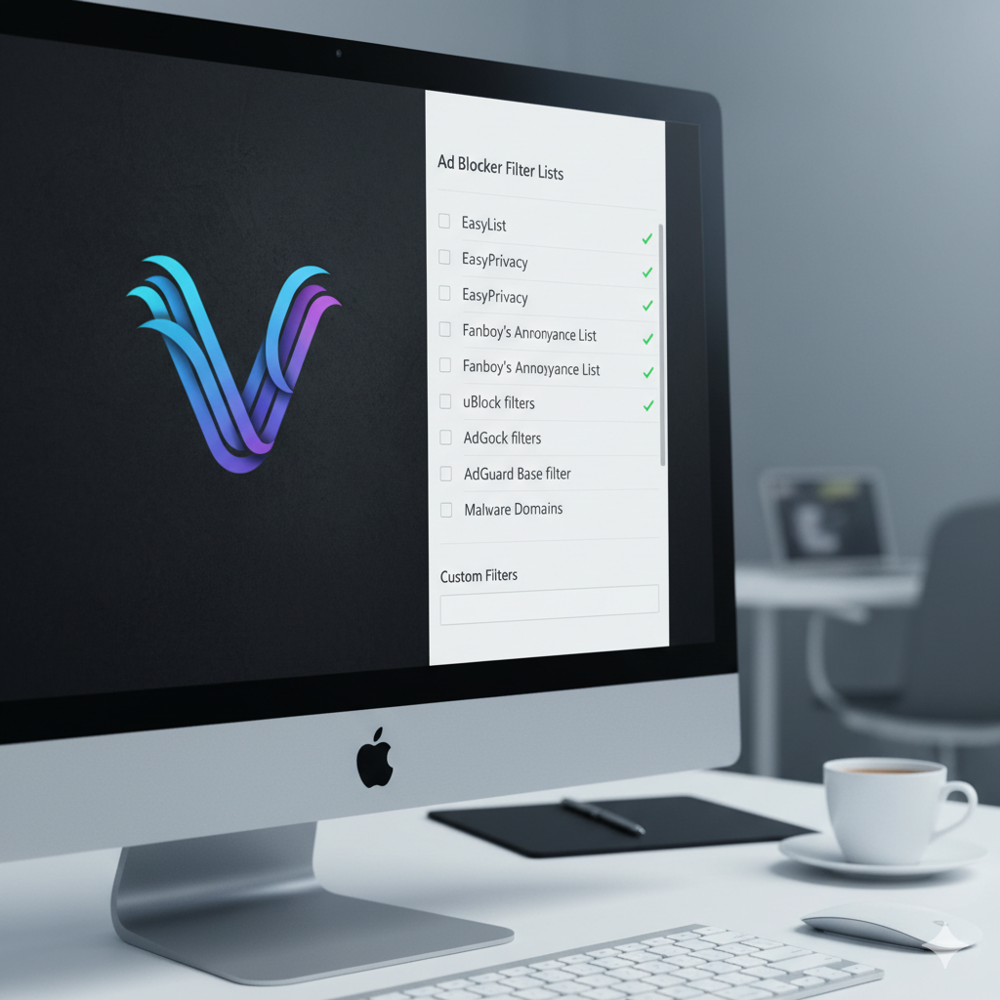

Modularer Ad-Block-Katalog für Vivaldi
In diesem Projekt habe ich ein strukturiertes und modulares GitHub-Repository (einen 'Katalog') erstellt, das eine kuratierte Sammlung der effektivsten und zuverlässigsten Ad-Blocker-Listen für den Vivaldi-Browser bereitstellt. Meine Hauptaufgabe war die Recherche und Organisation dieser Listen, um Vivaldi-Nutzern eine granular anpassbare und hochflexible Lösung anzubieten, die als Open-source-Resource zur Verfügung steht.
Die klare Gliederung des Projekts ermöglicht es Nutzern, individuelle Schutzprofile zusammenzustellen (z.B. nur Malware und Tracking, oder vollständiges Blockieren von Werbung), wodurch die Kontrolle über die Browsing-Erfahrung maximiert wird. Dieses zentrale Ressource vereinfacht die Konfiguration erheblich und garantiert ein sicheres, schnelles und auf persönliche Bedürfnisse zugeschnittenes Surferlebnis.
Technical Skills
- Forschungs- und Analysefähigkeit: Durchführung tiefgreifender Recherchen zu den effektivsten und zuverlässigsten Ad-Blocker-Listen am Markt. Analysieren von Tracking-Mechanismen und deren Granularität, um eine hochflexible Lösung zu bieten.
- Datenkuratierung & Informationsmanagement: Strukturierte Auswahl, Organisation und Pflege einer modularen Sammlung von Blocklisten, um Vivaldi-Nutzern ein sicheres und individuelles Schutzprofil zu ermöglichen.
- Version Control (Git/GitHub): Etablierung eines GitHub-Repositorys als Open-Source-Ressource zur transparenten Verwaltung von Änderungen, Gewährleistung der Struktur und Ermöglichung der kollaborativen Weiterentwicklung.